Gaussian filter
Convolution with a Gaussian kernel (also referred to as a Gaussian blur or as a Gaussian filter) is one of the most commonly used filters in image processing. The Gaussian kernel is formed by a matrix that contains the values of a rotationally symmetric Gaussian function
| (1) |
Kernel  of size 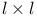 is separable and the
vector 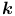 (see convolution)
can be composed from values 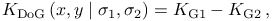,
where 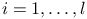,
of size 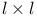 is separable and the
vector 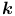 (see convolution)
can be composed from values 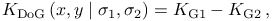,
where 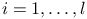,  , and 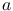 is a constant
scaling factor such that
, and 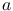 is a constant
scaling factor such that  . Users need to input the
kernel size
. Users need to input the
kernel size  and the standard deviation 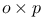. It is a common
practice to set the kernel size to 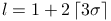.
and the standard deviation 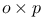. It is a common
practice to set the kernel size to 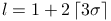.
Detector threshold formula
Refer to Threshold to see how filter results can be used to dynamically find threshold value.
Only the two default variables are provided by this filter:
| Gauss.I | current unfiltered image |
| Gauss.F | current filtered image |
Generated by LaTeXML ![[LOGO]]()